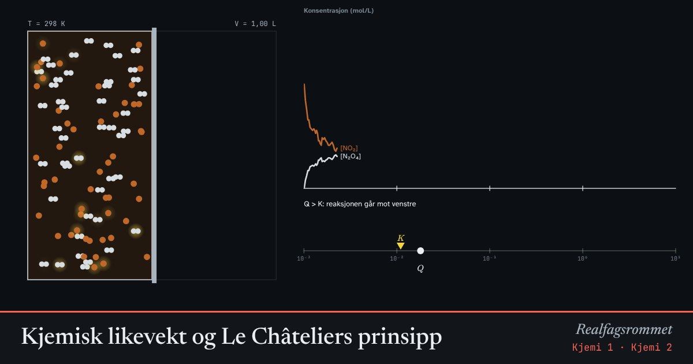

Kjemisk likevekt og Le Châteliers prinsipp
2 NO₂ (brun) ⇌ N₂O₄ (fargeløs). Reaksjonen går begge veier hele tiden. Ved likevekt går den like fort begge veier. Forstyrr likevekten og se systemet motvirke endringen.
Start animasjonen
Formler
Om animasjonen
Fargen i beholderen viser hvor mye brunt NO₂ det er. Det er det samme du ser hvis du varmer eller kjøler et glassrør med denne gassblandingen.
Reaksjonen mot høyre er eksoterm. Øker du temperaturen, forskyves likevekten mot venstre (mer brun gass), og blir mindre.
Mindre volum gir høyere trykk. Likevekten forskyves mot siden med færrest gassmolekyler, altså mot N₂O₄.
Reaksjonskvotienten regnes ut med de konsentrasjonene som er nå. Systemet endrer seg til .
Prøv dette
- Varm opp systemet. Forklar med Le Châteliers prinsipp hvorfor gassen blir brunere.
- Halver volumet. Hvilken vei forskyves likevekten? Hvorfor?
- Tilsett NO₂. Hva skjer med Q rett etterpå, og hva skjer etterpå?
- Endrer en katalysator likevekten? Begrunn.
Kompetansemål
- Kjemi 1: Kollisjonsteori, reaksjonsfart og likevekt
- Kjemi 2: Likevekt og massevirkningsloven